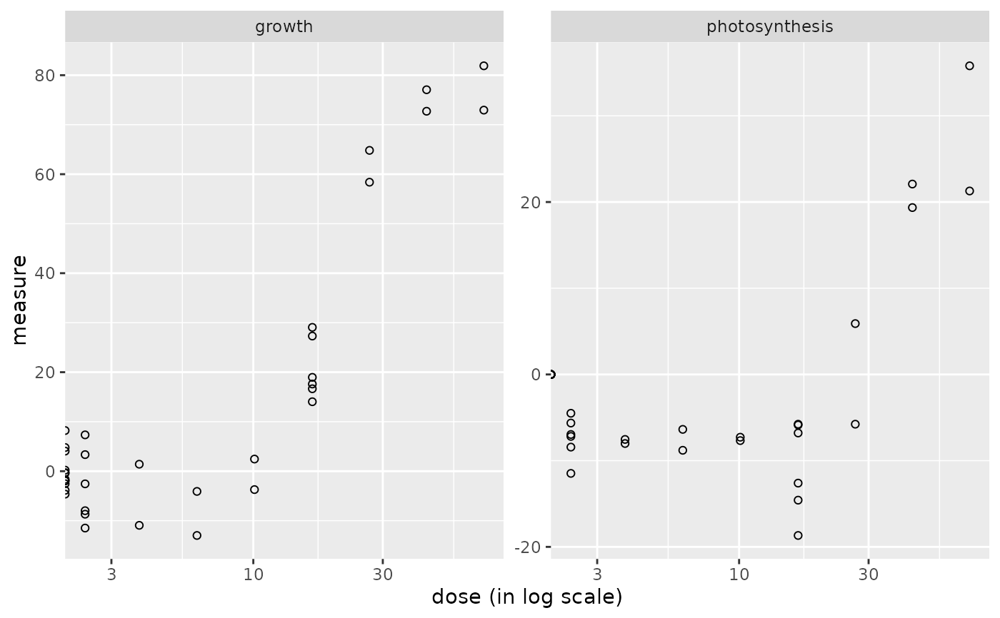
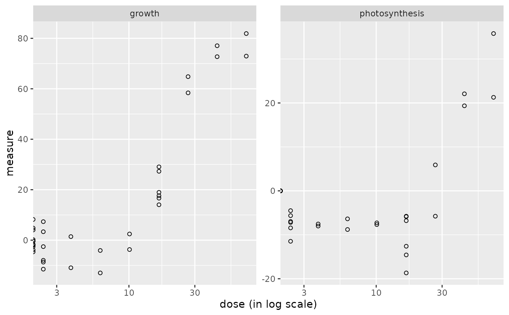

Import and check of continuous anchoring apical data
continuousanchoringdata.RdContinuous anchoring apical data are imported from a .txt file
(internally imported using the function read.table)
and checked or from a R object of class data.frame
(see the description
of argument file for the required format
of data).
No transformation is provided in this function.
If needed the pretreatment of data must be done before importation of data,
so that they can be directly modelled using a normal
error model. This strong hypothesis is required both for selection of responsive endpoints
and for dose-reponse modelling.
Arguments
- file
The name of the .txt file (e.g.
"mydata.txt") containing one row per endpoint, with the first column corresponding to the identifier of each endpoint, and the other columns giving the measured values of the endpoint for each replicate at each dose or concentration. In the first line, after a name for the endpoint column, we must have the tested doses or concentrations in a numeric format for the corresponding replicate (for example, if there are triplicates for each treatment, the first line could be "endpoint", 0, 0, 0, 0.1, 0.1, 0.1, etc.). This file is imported within the function using the functionread.tablewith its default field separator (sep argument). Alternatively an R object of classdata.framecan be directly given in input, corresponding to the output ofread.table(file, header = FALSE)on a file described as above. The two alternatives are illustrated below in examples.- backgrounddose
This argument must be used when there is no dose at zero in the data, to prevent the calculation of the BMD by extrapolation. All doses below or equal to the value given in backgrounddose will be fixed at 0, so as to be considered at the background level of exposition.
- check
If TRUE the format of the input file is checked.
- x
An object of class
"continuousanchoringdata".- ...
further arguments passed to print or plot functions.
Details
This function imports the data, checks their format
(see the description
of argument file for the required format
of data) and gives in the print information
that should help the user to check that the coding of data is correct : the tested doses (or concentrations)
the number of replicates for each dose, the number of endpoints.
Value
continuousanchoringdata returns an object of class "continuousanchoringdata", a list with 5 components:
- data
the numeric matrix of responses of each item in each replicate (one line per item, one column per replicate)
- dose
the numeric vector of the tested doses or concentrations corresponding to each column of data
- item
the character vector of the identifiers of the endpoints, corresponding to each line of data
- design
a table with the experimental design (tested doses and number of replicates for each dose) for control by the user
- data.mean
the numeric matrix of mean responses of each item per dose (mean of the corresponding replicates) (one line per item, one column per unique value of the dose
- containsNA
TRUE if the data set contains NA values
The print of a continuousanchoringdata object gives the tested doses (or concentrations)
and number of replicates for each dose, the number of items, the identifiers
of the first 20 items (for check of good coding of data) and the normalization method.
The plot of a continuousanchoringdata object shows the data distribution for each dose or concentration and replicate.
See also
See read.table the function used to import data, and
microarraydata, RNAseqdata and continuousomicdata for other types of data.
Examples
# (1) import and check of continuous anchoring data
# (an example with two apical endpoints of an example given in the package (see ?Scenedesmus))
#
datafilename <- system.file("extdata", "apical_anchoring.txt", package = "DRomics")
o <- continuousanchoringdata(datafilename, backgrounddose = 0.1, check = TRUE)
#> Warning:
#> We recommend you to check that your anchoring data are continuous and
#> defined in a scale that enable the use of a normal error model (needed
#> at each step of the workflow including the selection step).
# It is here necessary to define the background dose as there is no dose at 0 in the data
# The BMD cannot be computed without defining the background level
print(o)
#> Elements of the experimental design in order to check the coding of the data:
#> Tested doses and number of replicates for each dose:
#>
#> 0 2.4 3.8 6.2 10.1 16.5 26.8 43.5 70.7
#> 12 6 2 2 2 6 2 2 2
#> Number of endpoints: 2
#> Names of the endpoints:
#> [1] "growth" "photosynthesis"
# \donttest{
plot(o)
 # }
# If you want to use your own data set just replace datafilename,
# the first argument of continuousanchoringdata(),
# by the name of your data file (e.g. "mydata.txt")
#
# You should take care that the field separator of this data file is one
# of the default field separators recognised by the read.table() function
# when it is used with its default field separator (sep argument)
# Tabs are recommended.
# Use of an R object of class data.frame
# on the same example (see ?Scenedesmus for details)
data(Scenedesmus_apical)
o <- continuousanchoringdata(Scenedesmus_apical, backgrounddose = 0.1)
#> Warning:
#> We recommend you to check that your anchoring data are continuous and
#> defined in a scale that enable the use of a normal error model (needed
#> at each step of the workflow including the selection step).
print(o)
#> Elements of the experimental design in order to check the coding of the data:
#> Tested doses and number of replicates for each dose:
#>
#> 0 2.4 3.8 6.2 10.1 16.5 26.8 43.5 70.7
#> 12 6 2 2 2 6 2 2 2
#> Number of endpoints: 2
#> Names of the endpoints:
#> [1] "growth" "photosynthesis"
# \donttest{
plot(o)

# }
# }
# If you want to use your own data set just replace datafilename,
# the first argument of continuousanchoringdata(),
# by the name of your data file (e.g. "mydata.txt")
#
# You should take care that the field separator of this data file is one
# of the default field separators recognised by the read.table() function
# when it is used with its default field separator (sep argument)
# Tabs are recommended.
# Use of an R object of class data.frame
# on the same example (see ?Scenedesmus for details)
data(Scenedesmus_apical)
o <- continuousanchoringdata(Scenedesmus_apical, backgrounddose = 0.1)
#> Warning:
#> We recommend you to check that your anchoring data are continuous and
#> defined in a scale that enable the use of a normal error model (needed
#> at each step of the workflow including the selection step).
print(o)
#> Elements of the experimental design in order to check the coding of the data:
#> Tested doses and number of replicates for each dose:
#>
#> 0 2.4 3.8 6.2 10.1 16.5 26.8 43.5 70.7
#> 12 6 2 2 2 6 2 2 2
#> Number of endpoints: 2
#> Names of the endpoints:
#> [1] "growth" "photosynthesis"
# \donttest{
plot(o)

# }